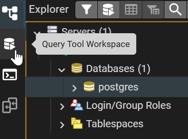
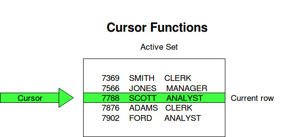
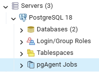

Automatització
L'automatització consisteix en fer tasques de manera sistemàtica i repetitiva sense que estiga involucrat un usuari en la seua execució
Quan parlem d’automatització en postgresql, generalment ens referim a processos que es programen per executar-se automàticament, sense necessitat d’intervenció manual. postgresql ofereix diverses eines i mètodes per fer això
Avantatges Automatització
- Estalvi de temps
- Reducció costos administració
- Reducció errors ( humà)
Tipus
- Programa extern (al SGBD)
- Programador de Tasques de Windows, Crontab en Linux, etc..
- Programa intern : rutina de bbdd + job
Rutina
- Script, guió, programa o seqüència de comandos que permeten dur a terme el processament d'unes certes accions
- Quan és creada rep un nom que permet que siga invocada tantes vegades com siga necessari
- Van ser introduïdes en la versió SQL3, o SQL:1999
Els guions o scripts donaren pas al PL/SQL (Procedural Language, que és diferent del SQL )
SQL (Structured Query Language) és un llenguatge declaratiu. S’utilitza per gestionar i consultar bases de dades. No té estructures de control com bucles o condicions complexes. SELECT (consultar dades), INSERT (inserir dades), UPDATE (actualitzar dades), DELETE (esborrar dades), i altres com DDL, DCL, TCL
PL/pgSQL (Procedural Language /PostgreSQL Structured Query Language). És una adaptacio de PL/SQL creada per Oracle, a Postgres. És un llenguatge procedimental. Permet utilitzar: Variables, Condicions (IF), Bucles (LOOP, WHILE, FOR), Procediments i funcions. S’utilitza per crear programs dins de la base de dades.
El SGBD deu proporcionar:
- Eines necessàries per a crear rutines
- Eines per a executar les rutines automàticament
Avantatges rutina interna
- Rendiment
- Reutilització de codi
- Encapsula regles de negoci
- Major seguretat
Les rutines: S’han de Documentar
QUE ??
Descripció de la tasca, descripció de paràmetres d’entrada i eixida, Autor, Versió, Data d’última modificació, etc..
COM ??
** Fent servir comentaris en el codi de les rutines. Amb /* */ o --
-- Esta linea és un comentari
** Fent servir documentació institucional en qualsevol suport (documents, fulls de càlcul, diagrames,etc..)
🧾 DO Bloc en PL/pgSQL
Què és un DO bloc?
Un DO bloc és una unitat de codi en PL/pgSQL que:
- No té nom ni es guarda a la base de dades.
- S’executa directament des de la pestanya. Es pot guardar en un fitxer extern i després recuperar.
- És ideal per a proves o per a executar operacions puntuals.
- Pot incloure sentències SQL, declaracions de variables, control de flux, i gestió d’excepcions.
En psql es pot:
- Es pot editar el contingut del buffer amb
\e - Es pot vore el contingut del buffer amb
\p - Es pot executar el contingut del buffer amb
\i - Guardar el contingut del buffer en un arxiu ( posa nom + .sql )
- postgres=# \w nom_fitxer.sql
- Carrega el contingut d'un fitxer en el buffer (però NO l'executa)
- postgres=# \e nom_fitxer.sql
- Executa el contingut d'un fitxer
- postgres=# \i nom_fitxer.sql
En pgAdmin

Des de Query Tool Workspace. Es treballa amb WorkSheets (pestanya oberta). Cada pestanya és una connexió
Per executar una linia del WorkSheet, prem Alt- F5
Per executar TOTES les linies(SCRIPT) , prem F5
Per guardar el contingunt del WorkSeet, Ves a icona per fer Ctrl-S (Save) o Save As…
Per recuperar el text guardat en una fitxer, → Open → o Ctrl-O
Una altra forma de obrir un QueryToolWorkspace, des del menu (estaguent situat en una bbdd concreta), Tools, Query Tools, o prement Atl-May-Q
Estructura bàsica d’un DO bloc
DO $$
BEGIN
RAISE NOTICE 'Hola món';
END;
$$ LANGUAGE plpgsql;
Per executar este bloc DO, s'ha de fer amb F5 (script), en l'altre cas, en executar sentència, donarà un error: 'ERROR: unterminated dollar-quoted string at or near "$$' perquè sols arriba fins al primer ";"
Exemple
DO $$
declare
i int;
BEGIN
i := 445;
RAISE NOTICE 'Hola món';
RAISE NOTICE 'valor de i %', i;
RAISE NOTICE 'valor de i*i %', i*i ;
RAISE NOTICE 'hui es %', current_date;
END;
$$ LANGUAGE plpgsql;
PL/pgSQL és case-sensitive respecte als noms de variables, funcions i identificadors.
DO $$
DECLARE
x_valor int := 10;
X_VALOR int := 20;
BEGIN
RAISE NOTICE 'x_valor = %, X_VALOR = %', x_valor, X_VALOR;
END;
$$ LANGUAGE plpgsql;
🗃️ Comentaris, Variables i Operacions en PL/pgSQL
Comentaris
L'ùs de comentaris és un recurs per poder documentar el codi. Com s'ha dit abans, és molt important documentar el codi
-- En dos guionets es posa un comentari d'una línia.
/* En la barra i l'asterisc es pot
posar comentaris de més d'una línia
*/
Variables
Una variable en PL/pgSQL és un espai de memòria per emmagatzemar dades temporals durant l'execució d’un bloc de codi. Pot contindre textos, números, dates, etc.
En PL/pgSQL, les variables s’han de declarar sempre abans d’utilitzar-les. Les variables es declaren a la secció DECLARE (o a la part de declaració d’un procediment, funció o paquet).
Per "crear" una variable és necessari:
Un nom
Un tipus
Un valor (opcional)
Per "usar" una variable, sols és necessari saber el nom
Estructura bàsica
DO $$
DECLARE
nom_variable tipus ; -- Es declara però no s'inicialitza. Pren el valor NULL
nom_variable tipus := valor_inicial; -- Es declara i s'inicialitza amb un valor
BEGIN
-- ús de la variable
END;
$$ LANGUAGE plpgsql; -- Tipus de dades en PL/pgSQL int (enter) text (string sense límit) varchar(n) (string amb límit) numeric(p,s) (decimals amb límit) numeric (permet qualsevol nombre de decimals (més flexible)) boolean DATE (any,mes,dia) TIMESTAMP (any,mes,dia, hora, min, seg, part de segon) RECORD ROW int[] (ARRAY de ints) Tipus compostos personalitzats (TYPE)
Tipus bàsics
| Tipus | Descripció | Exemple |
|---|---|---|
text |
Cadena de text de longitud variable | 'Hola', 'Joan' |
int |
Números amb precisió i escala | 123, 45.67 |
DATE |
Data i hora | now current_date |
BOOLEAN |
TRUE, FALSE, NULL (només PL/pgSQL) | TRUE |
%TYPE |
Tipus igual al d’una columna o una altra variable | taula.columna%TYPE |
🧪 Exemple de declaració
DECLARE
v_nom text := 'Anna';
v_edat int := 30;
v_sou numeric 8.27;
v_data_naix DATE := now();
v_es_actiu BOOLEAN := TRUE;
BEGIN
END; 🛠️ Com assignar valors
-- En el bloc DECLARE
v_nom text := 'Anna';
-- En el bloc principal BEGIN
- Assignació directa:
v_edat := 25; - Amb SELECT INTO:
SELECT sou INTO v_sou FROM empleats WHERE id = 5; o SELECT avg(sou) INTO v_mitjanasou FROM empleats WHERE departament=101;
❗ Detalls importants
- Les variables només existeixen dins del bloc on es declaren.
- No pots fer
SELECT ...senseINTOdins de PL/pgSQL. BOOLEANnomés es pot usar dins de PL/pgSQL, no en SQL estàndard.
Operacions
Operacions amb Variables en PL/pgSQL
Una vegada declarades, les variables en PL/pgSQL poden utilitzar-se per fer càlculs, tractament de text, dates i lògica condicional. Ací tens exemples clars i útils:
📐 1. Operacions aritmètiques
Per fer sumes, restes, multiplicacions, divisions i potències amb variables de tipus NUMBER:
DECLARE
a int := 10;
b int := 3;
resultat1 int;
BEGIN
resultat1 := a + b;
raise notice ' %' ,resultat1 ;
resultat1 := a - b;
raise notice ' %' ,resultat1 ;
resultat1 := a * b;
raise notice ' %' ,resultat1 ;
resultat1 := a / b;
raise notice ' %' ,resultat1 ;
resultat1 := a % b;
raise notice ' %' ,resultat1 ;
END; Precedència: No s'ha d'oblidar que no és el mateix 2 + 5 * 3 que (2 + 5) * 3. La precedència o ordre de les operacions és crucial en el resultat
En PL/pgSQL este ordre de precedència és el següent:
| ( ) | unaris | ** potència | * , /, mod | + i - | comparació | lògics (NOT AND OR) |
Encara que conegues la precedència, usa parèntesis per fer el codi: *més clar, *menys propens a errors, *més llegible per altres desenvolupadors
Altres operacions aritmètiques amb funcions: ABS, ROUND, MOD, CEIL, CEILING FLOOR, POWER, SQRT, TO_CHAR
🔤 2. Operacions amb cadenes de text
Les cadenes (VARCHAR) es concatenen amb ||
DECLARE
nom VARCHAR(20) := 'Joan';
cognom VARCHAR(20) := 'Garcia';
nom_complet VARCHAR(50);
BEGIN
nom_complet := nom || ' ' || cognom;
raise notice 'Nom complet: ' || nom_complet ;
END; Altres operacions amb funcions: LENGTH, UPPER, LOWER, INITCAP, SUBSTRING, POSITION, REPLACE, TRIM, LTRIM, RTRIM, TO_NUMBER
📅 3. Operacions amb dates
Les dates es poden restar per obtenir la diferència (resultat en dies, i hores/min)
També es poden sumar 'intervals'
DO $$
DECLARE
d1 date ;
d2 date;
resultat1 int;
BEGIN
d1 := now();
d2 := date '2026-01-01';
resultat1 := d1 - d2 + 8;
raise notice ' %' ,resultat1 ;
END;
$$ LANGUAGE plpgsql; -- Exemples d'operacions amb dates SELECT CURRENT_DATE + 7 AS setmana_propera; SELECT date '2026-03-22' - date '2026-03-20' AS dies_diff; SELECT CURRENT_DATE + interval '1 month' AS mes_proper; SELECT CURRENT_DATE - interval '2 weeks' AS fa_dos_setmanes;
--Comparacions SELECT '2026-03-22'::date > '2026-03-20'::date; -- true SELECT NOW() BETWEEN '2026-03-22 00:00' AND '2026-03-22 23:59';
Al igual que TO_DATE, està el TO_CHAR, amb la posibilitat d'usar màscara ('DD/MM/YY HH:MI PM')
✔️ El tipus "DATE" pot emmagatzemar fins al dia. (Any, mes, dia)
Si es necessita més precisió, es pot utilitzar el tipus "TIMESTAMP", el qual
pot emmagatzemar fins a milionèsima de segon (Exemple d'un valor de tipus TIMESTAMP: 2026-03-22 15:57:59.811083)
S'ha d'anar amb cura en les operacions amb dates, perquè tots els mesos no tenen el mateix nombre de dies, ni tots els anys tampoc tenen el mateix nombre de dies !!
4. Operacions lògiques
Amb variables BOOLEAN, pots fer condicions:
AND OR NOT Es pot utilitzar variables BOOLEAN o fer comparacions entre nombres, textos o dates amb els operadors següents:
=igualtat<>diferent>,<,>=,<=AND,OR,NOT
CASE Sensitive
En PL/pgSQL: 'admin' no és igual que 'ADMIN'
Es poden comparar amb < o > també de manera que les cadenes es comparen caràcter per caràcter,
segons l’ordre lexicogràfic (semblant a l’ordre del diccionari).
'Ana' < 'Berta' -- TRUE 'abc' < 'abd' -- TRUE 'Z' < 'a' -- TRUE (perquè el codi ASCII de Z és menor)
Les cadenes de text també es poden comparar amb LIKE, usant '%'=>(qualsevol caracter) o '-'=>(un caracter)
També amb ILIKE
IF nom LIKE 'Mar%' THEN
✨ Pots provar aquests blocs en pgAdmin, en el Query Tool Workspace.
🔁 Estructures de control en PL/pgSQL
Les estructures de control són fonamentals per controlar el flux d'execució d’un bloc de codi PL/pgSQL. Les principals són: Condicionals i Bucles
Condicionals
Estructura IF
IF condicio THEN
instruccions;
ELSIF altra_condicio THEN
instruccions;
ELSE
instruccions;
END IF;
El ELSE i ELSEIF són opcionals
Exemple IF (🧪 Prova-ho!)
DO $$
DECLARE
x int := 3;
BEGIN
IF x > 5 THEN
RAISE NOTICE 'x és major que 5';
ELSE
RAISE NOTICE 'x és menor o igual a 5';
END IF;
END;
$$ LANGUAGE plpgsql;
-- Exemple amb ELSEIF
DO $$
DECLARE
x int := 5;
BEGIN
IF x > 5 THEN
RAISE NOTICE 'Major que 5';
ELSIF x = 5 THEN
RAISE NOTICE 'Igual a 5';
ELSE
RAISE NOTICE 'Menor que 5';
END IF;
END;
$$ LANGUAGE plpgsql;
Estructura CASE
CASE expressio
WHEN valor1 THEN instruccions;
WHEN valor2 THEN instruccions;
ELSE instruccions;
END CASE;
Exemple CASE (🧪 Prova-ho!)
-- CASE amb expressions booleanes
DO $$
DECLARE
nota int := 7;
BEGIN
CASE
WHEN nota >= 9 THEN
RAISE NOTICE 'Excel·lent';
WHEN nota >= 5 THEN
RAISE NOTICE 'Aprovat';
ELSE
RAISE NOTICE 'Suspès';
END CASE;
END;
$$ LANGUAGE plpgsql;
-- CASE amb valors
DO $$
DECLARE
dia int := 3;
BEGIN
CASE dia
WHEN 1 THEN RAISE NOTICE 'Dilluns';
WHEN 2 THEN RAISE NOTICE 'Dimarts';
WHEN 3 THEN RAISE NOTICE 'Dimecres';
ELSE RAISE NOTICE 'Altre dia';
END CASE;
END;
$$ LANGUAGE plpgsql;
🔁 Bucles
🔄 LOOP bàsic (amb sortida manual)
LOOP
instruccions;
EXIT WHEN condicio;
END LOOP;
Exemple LOOP (🧪 Prova-ho!)
DO $$
DECLARE
i int := 1;
BEGIN
LOOP
RAISE NOTICE 'i = %', i;
i := i + 1;
EXIT WHEN i > 5;
END LOOP;
END;
$$ LANGUAGE plpgsql;
LOOP amb WHILE
WHILE condicio LOOP
instruccions;
END LOOP;
Exemple WHILE (🧪 Prova-ho!)
DO $$
DECLARE
i int := 1;
BEGIN
WHILE i <= 5 LOOP
RAISE NOTICE 'i = %', i;
i := i + 1;
END LOOP;
END;
$$ LANGUAGE plpgsql;
LOOP amb FOR
FOR variable IN inici..final LOOP
instruccions;
END LOOP;
Exemple FOR
DO $$
DECLARE
i int;
BEGIN
FOR i IN 1..5 LOOP
RAISE NOTICE 'i = %', i;
END LOOP;
END;
$$ LANGUAGE plpgsql;
DO $$
DECLARE
i int;
BEGIN
FOR i IN REVERSE 5..1 LOOP
RAISE NOTICE 'i = %', i;
END LOOP;
END;
$$ LANGUAGE plpgsql;
Notes addicionals
- EXIT WHEN → surt d’un bucle en una condició
- EXIT → surt d’un bucle "directament"
- EXIT label → surt d’un bucle identificat amb una etiqueta. Útil si hi ha bucles niats
- EXIT label WHEN → surt d’un bucle identificat amb una etiqueta. Útil si hi ha bucles niats
- <<label>> → Identifica un bucle , per deprés usar EXIT label
- CONTINUE → salta a la següent iteració
- Els bucles poden ser niats i combinen amb IF o CASE
Bon ús d’estructures
- Usa `FOR` si saps quantes vegades vols repetir
- Usa `WHILE` si depens d’una condició externa
- Usa `IF` per bifurcar el comportament del codi
- ⚠️ Evita bucles infinits, assegura sempre una condició de sortida
⚙️ Procediments, Funcions i Triggers
Definicions ràpides
- Procediment: bloc PL/pgSQL que realitza una acció, pot tenir paràmetres però no retorna valor directament.
- Funció: com un procediment, però retorna un valor mitjançant
RETURN. - Trigger: bloc de codi que s'executa automàticament quan es produeix un esdeveniment sobre una taula (INSERT, UPDATE, DELETE).
Permisos necessaris
❗ Un usuari necessita tindre permís per executar rutines, o per crear-les i executar-es !!
-- Si sols necessita executar GRANT EXECUTE ON PROCEDURE nom_proc TO <usuari>/<rol> [WITH GRANT OPTION];
-- Per poder crear ( i executar les seues) GRANT CREATE ON SCHEMA public to usuari [WITH GRANT OPTION];
Vista del DD
Per vore si un usuari té estos permisos
SELECT nspname FROM pg_namespace WHERE has_schema_privilege(current_user, oid, 'CREATE') -- Sustituir current_user per 'nomusuari' AND nspname NOT LIKE 'pg_%' AND nspname <> 'information_schema';
PROCEDURE – Procediment
Els procediments NO retornen valor i NO poden ser cridades dins SELECT o expressions. Poden ser cridats des de dins d'un bloc DO, directament des de linea d'ordres psql o pgAdmin, , des de dins d'un altre procediment o funció, o des del DBMS_SCHEDULER amb un job
Exemples
BEGIN
call nom_proc();
END;
FUNCTION – Funció
Diferència clau:
Les funcions retornen un valor i poden ser cridades des de dins de SELECT o expressions.
Exemples
DO $$
DECLARE
data_actual TIMESTAMP;
valor_aleatori NUMERIC;
data_convertida DATE;
BEGIN
data_actual := NOW();
valor_aleatori := RANDOM() * 99 + 1; -- equivalent a VALUE(1,100)
data_convertida := TO_DATE('2025-04-20', 'YYYY-MM-DD');
RAISE NOTICE '%', (SELECT UPPER(nom) FROM empleats LIMIT 1);
RAISE NOTICE '%', (SELECT NOW());
RAISE NOTICE '%', (SELECT sou FROM empleats LIMIT 1);
RAISE NOTICE '%', NOW();
RAISE NOTICE '%', data_convertida;
END;
$$ LANGUAGE plpgsql;
TRIGGER – Disparador
Diferència clau:
Els trigger no retornen un valor, i no se'ls pot cridar Son blocs de codi amb nom que son cridats automaticament pel sistema quan passa algun esdeveniment.
- Com..
- Esdeveniment DML: INSERT, UPDATE, DELETE
- Esdeveniment DDL: CREATE, ALTER, DROP
Exemples
-- Al Inserir un nou empleat es disparara el trigger associat -- al INSERT en la taula EMPLEATS INSERT INTO empleats (id_empleat, nom, cognom, sou) VALUES (101, 'Joan', 'García', 2500); -- En este moment, el sistema crida al trigger
⚙️ Procediments en PL/pgSQL
Què és un procediment?
Un procediment és un bloc de codi PL/pgSQL emmagatzemat amb un nom que es pot cridar per executar una acció. Pot rebre paràmetres i fer servir sentències SQL, estructures de control, bucles, excepcions, etc.
Estructura bàsica
CREATE OR REPLACE PROCEDURE saludar()
LANGUAGE plpgsql
AS $$
BEGIN
RAISE NOTICE 'Hola!';
END;
$$;
Nota important (seguretat) - 👉 Un procediment pot executar-se amb: - SECURITY INVOKER (per defecte) → permisos de qui l’executa - SECURITY DEFINER → permisos del propietari
Procediment amb parametres
-- Definir procediment
CREATE PROCEDURE suma(a int, b int)
LANGUAGE plpgsql
AS $$
BEGIN
RAISE NOTICE 'Suma: %', a + b;
END;
$$;
-- Cridar a procediment
CALL suma(3, 4);
Tipus de paràmetres:
IN: entrada (per defecte)OUT: sortidaINOUT: entrada i sortida
Sols vorem els IN, que a més a més, no cal posar la paraula IN perquè és el tipus per defecte
CREATE PROCEDURE obtenir_doble(IN x int, OUT resultat int)
Valors per defecte
CREATE PROCEDURE saludar(nom text DEFAULT 'Usuari')
📘 Consultar procediments
- Llistar procediments de l’usuari:
SELECT routine_name, routine_schema, routine_type
FROM information_schema.routines
WHERE routine_type = 'PROCEDURE';
SELECT pg_get_functiondef(p.oid)
FROM pg_proc p
WHERE p.proname = 'nom_procediment';
-- Des de psql \df \dfP \df+ nom_proc
🧹 Esborrar un procediment
DROP PROCEDURE nom_proc;
Bones pràctiques
- Dona noms clars i significatius
- Documenta el comportament i els paràmetres
- Gestiona excepcions amb
EXCEPTIONper capturar errors - ⚠️ Evita fer massa coses dins d’un sol procediment → separa funcionalitats
Formes de cridar / invocar un procediment
- Notació posicional
- Notació nominal
call afegir_client('Joan', 'García', '123456789');
call afegir_client( p_nom => 'Joan', p_cognom => 'García', p_telefon => '123456789');
o
call afegir_client(p_telefon => '123456789', p_nom => 'Joan', p_cognom => 'García'); Totes són correctes
Funcions en PL/pgSQL
📘 Què és una funció?
Una funció és un bloc de codi PL/pgSQL que rep zero o més paràmetres i retorna un valor. A diferència dels procediments, les funcions es poden cridar dins sentències SQL i expressions.
Exemple: SELECT nom, UPPER(nom) FROM alumnes; SELECT * FROM alumnes WHERE LENGTH(nom) > 5;
Al igual que en els procediments existeixen funcions predefinides que podem utilitzar en postgresql
| Tipus de Funcions | Funcions |
|---|---|
| Funcions Numèriques | ROUND, TRUNC, MOD, SQRT, POWER, SIGN, ABS, CEIL, FLOOR, RANDOM |
| Funcions de Cadenes (Strings) | LOWER, UPPER, TRIM, SUBSTRING, LENGTH, REPLACE, POSITION, TRANSLATE, CHR, ASCII, INITCAP, |
| Funcions per treballar amb NULL | NULLIF, COALESCE |
| Funcions de Dates | CURRENT_DATE, NOW(), EXTRACT , CURRENT_TIMESTAMP, AGE |
| Funcions de Conversió | TO_NUMBER, TO_DATE, TO_CHAR |
| Funcions de Sistema | VERSION(), CURRENT_USER, PG_DATABASE_SIZE(), PG_TABLE_SIZE() |
I, al igual que en els procediments , podem definir noves funcions (funcions definides per l'usuari)
Hem de tindre en compte, que una funció necessita saber quin tipus de dada va a retornar, i, a més a més, en algun punt del cos de la funció, ha de retornar una dada d'aquest tipus
Estructura bàsica
CREATE [OR REPLACE] FUNCTION nom_func ( paràmetres )
RETURNS tipus AS $$
BEGIN
-- codi
RETURN valor;
END;
$$ LANGUAGE plpgsql;
Exemple simple
CREATE OR REPLACE FUNCTION suma(a integer, b integer)
RETURNS integer AS $$
BEGIN
RETURN a + b;
END;
$$ LANGUAGE plpgsql;
CREATE FUNCTION doble(x INT) RETURNS INT AS $$ BEGIN RETURN x * 2; END; $$ LANGUAGE plpgsql;
Exemple Crida des de sentència SQL
SELECT doble(4);
Tipus de paràmetres
IN: entrada (per defecte)OUTiIN OUTno es poden fer servir a funcions que es cridin dins SQL
⚠️ Limitacions
- Les funcions que es criden des de SQL no poden modificar dades (no poden fer INSERT, UPDATE o DELETE)
- Han de ser deterministes: el resultat ha de dependre només dels valors d’entrada
📥 Consulta de funcions
-- Funcions de l’usuari
SELECT proname
FROM pg_proc
WHERE pronamespace NOT IN (
SELECT oid FROM pg_namespace
WHERE nspname LIKE 'pg_%' OR nspname = 'information_schema'
);
-- Amb més informació
SELECT n.nspname AS esquema,
p.proname AS funcio,
pg_get_function_result(p.oid) AS retorna,
pg_get_function_arguments(p.oid) AS arguments
FROM pg_proc p
JOIN pg_namespace n ON p.pronamespace = n.oid
WHERE n.nspname NOT LIKE 'pg_%'
AND n.nspname <> 'information_schema';
Com cridar funcions:
- ✔️ Dins
SELECT,WHERE,ORDER BY - ✔️ Assignant a una variable dins un bloc
- ❌ No es poden fer servir dins DML (si tenen codi que modifica dades)
Bones pràctiques
- Utilitza noms clars i descriptius
- Fes servir
RETURNnomés una vegada si és possible - Documenta què fa la funció i què retorna
- ⚠️ Evita fer INSERT/UPDATE dins funcions si s’han de cridar des de SQL
🧹 Esborrar una funció
DROP FUNCTION nom_de_la_funcio;
⚠️ Consideracions:
- Assegura’t que no hi ha cap procediment, vista o altre objecte que depenga d’eixa funció abans d’eliminar-la.
- Si la funció no existeix, Postgres donarà un error
🚨 Disparadors (Triggers) en PostgreSQL
📘 Què és un trigger?
Un trigger és un bloc de codi PL/pgSQL que s’executa automàticament quan es produeix un esdeveniment (com un INSERT, UPDATE o DELETE) sobre una taula o vista.
Un trigger en PostgreSQL no es pot cridar manualment com una funció o procediment. Sempre s’executa automàticament quan passa un esdeveniment.
El bloc de codi del trigger s'executara:
- BEFORE: abans de l’esdeveniment
- AFTER: després de l’esdeveniment
Segons el cas, dins del bloc de codi, es poden utilitzar valors d’una fila abans de la operació o després de l’operació:
Per fer això s'usarà NEW. o OLD.
Nivells d’actuació
- Fila a fila → actua per cada fila afectada (s'indica posant FOR EACH ROW)
- Per esdeveniment → actua una sola vegada per operació (s'indica no posant res)
Sintaxi bàsica (fila a fila)
-- 1. Crear la funció del trigger
CREATE OR REPLACE FUNCTION log_alumne_insert()
RETURNS TRIGGER
LANGUAGE plpgsql
AS $$
BEGIN
INSERT INTO log_alumnes(alumne_id, nom, data_insert)
VALUES (NEW.id, NEW.nom, now());
RETURN NEW; -- IMPORTANT: RETURN NEW per triggers BEFORE/AFTER INSERT
END;
$$;
-- 2. Crear el trigger. Auditoria --
CREATE TRIGGER trg_alumne_insert
AFTER INSERT ON alumnes
FOR EACH ROW
EXECUTE FUNCTION log_alumne_insert();
En triggers BEFORE: Si NO retornes correctament: RETURN NULL; 👉 es cancel·la l’operació (no s’insereix / no s’actualitza / no s’elimina)
S'ha de retornar:
BEFORE DELETE --> RETURN OLD;
BEFORE INSERT --> RETURN NEW;
BEFORE UPDATE --> RETURN NEW;
En la resta, no importa, es pot retornar NULL
Exemple: trigger per a impedir valors curts
CREATE OR REPLACE FUNCTION check_nom_length()
RETURNS TRIGGER AS $$
BEGIN
IF char_length(NEW.nom) < 3 THEN
RAISE EXCEPTION 'El nom ha de tenir almenys 3 caràcters';
END IF;
RETURN NEW;
END;
$$ LANGUAGE plpgsql;
CREATE TRIGGER trg_check_nom -- Impedix actualitzar si no es complix condició
BEFORE UPDATE ON alumnes
FOR EACH ROW
EXECUTE FUNCTION check_nom_length();
NEW. i OLD. representen els valors nous i antics respectivament per a cada fila.
📘 Consultes útils al DD
SELECT trigger_name,
event_manipulation AS event,
event_object_table AS table_name,
action_timing AS timing,
action_statement AS function_call
FROM information_schema.triggers
WHERE trigger_schema = 'public'; -- posar l’esquema que t’interessa
Bones pràctiques
- Usa noms clars i descripció funcional
- Documenta el comportament del trigger
- Evita codi complex o accions que modifiquin altres taules si no és necessari
- Controla el rendiment: massa triggers poden degradar l’eficiència
- Si cal registrar accions, fes servir una taula d’auditoria
🛠️ Activació i desactivació de triggers
-- Desactivar un trigger concret ALTER TABLE nom_taula DISABLE TRIGGER nom_trigger; -- Activar un trigger concret ALTER TABLE nom_taula ENABLE TRIGGER nom_trigger;
-- Desactivar tots els triggers de la taula ALTER TABLE alumnes DISABLE TRIGGER ALL; -- Tornar a activar tots els triggers ALTER TABLE alumnes ENABLE TRIGGER ALL;
🗑️ Eliminar un trigger
DROP TRIGGER log_insercio ON nom_taula;
La funció associada (log_alumne_insert()) no s’esborra automàticament, només el trigger.
-- Si vols eliminar també la funció del trigger (per neteja) DROP FUNCTION log_alumne_insert();
Seqüències en Postgresql
📘 Què és una seqüència?
Una seqüència és un objecte de base de dades que genera una sèrie de valors numèrics consecutius, normalment usats per a claus primàries, codis únics o control d’identificadors. És l’equivalent a un autoincrement en altres SGBD.
Crear una seqüència
-- Donar permís a un usuari per crear seqüències (crear objectes)
GRANT CREATE ON DATABASE empresa TO usuari;
-- Crear seqüència
CREATE SEQUENCE seq_alumnes
START 1 -- valor inicial
INCREMENT 1 -- increment
MINVALUE 1 -- mínim valor possible
MAXVALUE 10000 -- màxim valor (opcional)
CACHE 1; -- opcional, per rendiment
-- Esborrar seqüència
DROP SEQUENCE seq_alumnes;
Ús de la seqüència
Per obtenir el següent valor (es pot fer servir a INSERTs):
NEXTVAL('seq_alumnes')
Per consultar el valor actual (després d'haver fet NEXTVAL com a mínim una vegada):
CURRVAL('seq_alumnes')
Exemple d’ús en una inserció
INSERT INTO alumnes (id, nom, edat) VALUES (NEXTVAL('seq_alumnes'), 'Laia', 21);
📘 Consultar seqüències existents
SELECT sequence_name FROM information_schema.sequences WHERE sequence_schema = 'public'; -- posar l’esquema desitjat
SELECT * FROM pg_sequences WHERE schemaname='public';
🗑️ Eliminar una seqüència
DROP SEQUENCE seq_alumnes;
Exemple complet
CREATE SEQUENCE seq_factura START WITH 1000 INCREMENT BY 10 ;
-- Inserció amb NEXTVAL
INSERT INTO factures (id, data_emissio) VALUES (NEXTVAL('seq_factura'), now() );
Identity Column
Una identity column és un altre mecanisme d’postgres per generar valors sencers seqüencials únics i assignar-li'ls a camps numèrics; s'utilitzen generalment per a les claus primàries de les taules garantint que els seus valors no es repetisquen.
CREATE TABLE alumnes (
id INT GENERATED ALWAYS AS IDENTITY PRIMARY KEY,
nom TEXT,
.......);
| Característica | SEQUENCE | IDENTITY Column |
|---|---|---|
| Definició | Objecte independent que genera valors numèrics seqüencials. | Columna d'una taula que genera automàticament valors únics. |
| Ús principal | Generar claus primàries o valors seqüencials a voluntat. | Generar automàticament un valor únic per fila nova. |
| Com s'utilitza | Cal cridar `nom_seq.NEXTVAL` explícitament en la inserció. | Postgres gestiona el valor automàticament (amb `GENERATED ALWAYS` o `BY DEFAULT`). |
| Control de valor | L'usuari decideix quan i com consumir el següent valor. | El valor s'incrementa automàticament amb cada inserció (segons la configuració). |
| Flexibilitat | Molt flexible: pot ser utilitzada per diferents taules o processos. | Està lligada a una sola taula i columna. |
| Exemple de creació | CREATE SEQUENCE seq_client_id START WITH 1 INCREMENT BY 1; |
id NUMBER GENERATED BY DEFAULT AS IDENTITY |
| Compartició entre taules | Es pot usar en múltiples taules. | Només es pot usar en una taula específica. |
Consultar informació de les Identity Columns
SELECT table_name, column_name, identity_generation, start_value, increment_by FROM information_schema.columns WHERE identity_generation IS NOT NULL;
Cursors en PL/pgSQL
📘 Què és un cursor?

Un cursor és un mecanisme de PL/pgSQL que permet recórrer múltiples files
retornades per una consulta SELECT. Un cursor és com un punter que apunta a un conjunt de resultats d'una SQL i
deixa llegir-los u a u.
Serveix per treballar fila a fila amb el conjunt de resultats, com un bucle sobre una taula.
Tipus de cursors
- Implícits: creats automàticament per Postgres per a sentències DML (SELECT .. INTO, INSERT, UPDATE...) )
- Explícits: definits manualment per l’usuari per tractar SELECTs que tornen múltiples files
- FOR cursors: simplificació de l’ús explícit
Cursors implícits
No es declaren, i sols deurien tornar un resultat o fila:
SELECT DESCRIPCION INTO vdescripcion from PAISES WHERE CO_PAIS = 'ESP';
Els cursors implícits només poden retornar una única fila. En cas que es retorne més d'una fila (o cap fila) es produirà una excepció: Esta EXCEPCIÓ podrà ser capturada i tractada
Per salvar estes situacionses pot fer:
-- Ús de limit 1 SELECT DESCRIPCION INTO vdescripcion from PAISES WHERE CO_PAIS = 'ESP' limit 1; -- Això evita TOO_MANY_ROWS si hi ha més d’una coincidència -- Pero pot tornar un valor diferent del que es busca perquè hi han més d'u
O fer primer un:
SELECT count(*) INTO vcant from factura WHERE idcli = 'V00923';
I preguntar si vcant es 1
IF vcant=1 THEN
I despres preguntar :
IF vdescripcion IS NULL THEN
Atributs útils
- Quan Postgresql crea un cursor implícit, es pot consultar:
var is null→ si no s’ha trobat cap filaGET DIAGNOSTICS n = ROW_COUNT;→ nombre de files tractades
Ús d’un cursor explícit
Passos:
- Declarar el cursor
- Obrir-lo
- Llegir fila a fila
- Tancar-lo
Cursor FOR – simplificat
Postgresql gestiona automàticament l’obertura, lectura i tancament.
DO $$
DECLARE
v_alumne RECORD;
BEGIN
-- Itera sobre totes les files de la taula
FOR v_alumne IN
SELECT id, nom FROM alumnes ORDER BY id
LOOP
-- Fer alguna cosa amb cada fila
RAISE NOTICE 'Alumne: %, Nom: %', v_alumne.id, v_alumne.nom;
END LOOP;
END;
$$ LANGUAGE plpgsql;
Exemple cursor complet
DO $$
DECLARE
-- Cursor explícit
c_alumnes CURSOR FOR
SELECT id, nom FROM alumnes ORDER BY id;
-- Variable per guardar cada fila
v_id alumnes.id%TYPE;
v_nom alumnes.nom%TYPE;
BEGIN
-- Obrir cursor
OPEN c_alumnes;
LOOP
-- Agafar la següent fila
FETCH c_alumnes INTO v_id, v_nom;
-- Comprovar si s'ha trobat alguna fila
EXIT WHEN NOT FOUND;
-- Fer alguna cosa amb les dades
RAISE NOTICE 'Alumne: %, Nom: %', v_id, v_nom;
END LOOP;
-- Tancar cursor
CLOSE c_alumnes;
END;
$$ LANGUAGE plpgsql;
Bones pràctiques
- Sempre tanca els cursors després d’usar-los
- Utilitza FOR cursors si només necessites llegir
- Evita FETCHs sense
EXIT WHEN NOTFOUND
Gestió d’Excepcions en PL/pgSQL
📘 Què és una excepció?
Una excepció és una situació d’error que es produeix durant l’execució d’un bloc PL/pgSQL. Postgresql permet capturar aquestes situacions per gestionar-les de manera controlada i evitar que el bloc falle de manera abrupta.
Estructura general amb excepcions
DO $$
BEGIN
-- Codi normal
RAISE NOTICE 'Executant codi normal';
-- Exemple: forçar error
-- RAISE EXCEPTION 'Error simul·lat';
EXCEPTION
WHEN division_by_zero THEN
RAISE NOTICE 'S’ha detectat una divisió per zero';
WHEN others THEN
RAISE NOTICE 'S’ha produït una altra excepció';
END;
$$ LANGUAGE plpgsql;
Tipus d’excepcions
Excepcions predefinides
Postgresql les reconeix automàticament.
PostgreSQL té moltíssims tipus d’excepcions: division_by_zero, unique_violation, foreign_key_violation, etc.
Es pot consultar la llista sencera en la documentació oficial acíSi vols capturar tots els errors, sempre pots posar WHEN others THEN ....
RAISE EXCEPTION 'Missatge' interromp el flux i llança error cap a fora; RAISE NOTICE només mostra missatge sense parar el bloc.
Excepcions no predefinides
Postgresql les pot capturar amb SQLSTATE i SQLERRM:
DO $$
BEGIN
-- Operació que pot fallar
RAISE NOTICE 'Intentant dividir per zero...';
PERFORM 10 / 0; -- provoca error
EXCEPTION
WHEN OTHERS THEN
RAISE NOTICE 'Error %: %', SQLSTATE, SQLERRM;
END;
$$ LANGUAGE plpgsql;
🔧 Excepcions personalitzades
Es poden declarar amb EXCEPTION i cridar amb RAISE EXCEPTION:
DO $$
DECLARE
my_error EXCEPTION; -- declara excepció personalitzada
BEGIN
-- Llançar excepció personalitzada
RAISE EXCEPTION 'Això és un error personalitzat' USING ERRCODE = 'P0001';
EXCEPTION
WHEN my_error THEN
RAISE NOTICE 'S’ha capturat la meva excepció personalitzada';
WHEN others THEN
RAISE NOTICE 'Error desconegut %: %', SQLSTATE, SQLERRM;
END;
$$ LANGUAGE plpgsql;
Claus d’ús
RAISE EXCEPTION→ provoca una excepcióWHEN ... THEN→ captura una excepcióWHEN OTHERS THEN→ captura qualsevol error no gestionat abansSQLERRM→ mostra el missatge d’errorSQLSTATE→ mostra el codi numèric de l’error
Bones pràctiques
- Captura errors específics abans de fer servir
OTHERS - Informa l’usuari o registra l’error
- No captures
OTHERSsense mostrar cap missatge (silenciar errors és perillós) - Fes servir excepcions personalitzades quan tingues validacions pròpies
📅 Tasques automatitzables en PostgreSQL
Què es pot automatitzar?
En un entorn Postgresql, és habitual automatitzar tasques per millorar la gestió i el rendiment del sistema. Algunes de les tasques més comunes són:
- Exportacions i còpies de seguretat
- Importacions de dades
- Execució d'informes
- Neteja de logs i arxius antics
- Tasques de manteniment periòdic
📄 Scripts SQL i .bat
Pots crear scripts `.sql` amb comandes Postgresql i executar-los des de scripts `.bat` o `.sh` mitjançant psql.
Exemple: script SQL
-- arxiu: informe.sql -- informe.sql \pset pager off -- desactiva el paginador \o informe_resultats.txt -- envia la sortida a fitxer SELECT * FROM alumnes; \o -- torna la sortida a la consola \q -- surt de psql
🖥️ Script .bat (Windows)
-- arxiu: llança_informe.bat psql -d empresa -c "CALL el_meu_procediment();" pause
Una vegada creat el fitxer .bat, s'ha de crear una tasca programada. Panel de control → Tareas programadas → Agregar Tarea → ...
Consulta alguna guia de com usar el programador de tasques de Windows. guia1 , guia2
🐧 Script .sh (Linux)
#!/bin/bash psql -d empresa -c "CALL el_meu_procediment();"
En Linux, s'utilitza el CRON / CRONTAB per afegir tasques que s'executaran a determinades hores / dies () . Consulta alguna guia de com usar CRON guia1, guia2, o guia3, per a entendre les diferents opcions de programació horària.
📆 pg_cron
Postgresql disposa d'una extensió del sistema per programar tasques (anomenades jobs ) directament des de DINS la base de dades: pg_cron.
Primer s'ha d'instal·lar en el SO
Linux sudo apt install postgresql-XX-cron
-- En postgresql.conf shared_preload_libraries = 'pg_cron' -- Per fer que cron server s’inicialitze automàticament
⚠️ IMPORTANT: Després de modificar shared_preload_libraries, cal reiniciar el servidor,
sudo systemctl restart postgresql
En Windows és un poc més complicat,perquè s'ha de compilar codi font.
Usar extensió
CREATE EXTENSION IF NOT EXISTS pg_cron;
pg_cron només permet que un superusuari cree jobs.
Els jobs s’executen amb els privilegis del rol que els crea.
Si cal més granularitat s'usarà una altra eina, com pgAgent de pgAdmin
Crear una tasca programada
SELECT cron.schedule(
'job1',
'* * * * *',
$$CALL el_meu_procediment();$$
);
El rol que executa el job ha de tenir permisos per executar el SQL o procediment definit dins del job.
L’usuari 'usuari' no necessita ser superusuari per executar el job, només per cridar els procediments que té permís.
* Les expressions cron segueixen el format Linux: min hora dia_mes mes dia_setmana
* Els jobs s’executen dins de la BD, amb permisos del rol que crea el job.
┌───────────── min (0 - 59) │ ┌────────────── hour (0 - 23) │ │ ┌─────────────── day of month (1 - 31) or last day of the month ($) │ │ │ ┌──────────────── month (1 - 12) │ │ │ │ ┌───────────────── day of week (0 - 6) (0 to 6 are Sunday to │ │ │ │ │ Saturday, or use names; 7 is also Sunday) │ │ │ │ │ │ │ │ │ │ * * * * *
-- Exemples '10 seconds' # every 10 seconds * * * * * # every minute */5 * * * * # every 5 minutes 0 * * * * # every hour 0 0 * * * # daily at 12AM 0 0 * * 1-5 # 12AM every weekday 0 1 * * 0 # 1AM every Sunday 0 13 2 6 * # 1PM on the 2nd of June
Habilitar o deshabilitar la programació
-- Deshabilitar UPDATE cron.job SET active = false WHERE jobid = 1; -- Habilitar UPDATE cron.job SET active = true WHERE jobid = 1;
Els jobs desactivats no s’executen però romanen a la taula cron.job.
Modificar un job
-- change job's schedule SELECT cron.alter_job(42, '0 10 * * *'); -- returns void
Esborrar un job
SELECT cron.unschedule(jobid);
==> Documentació oficial de l'extensió .What is pg_cron.
📆 pgAgent , integrat en pgAdmin

- És un agent de programació de tasques per PostgreSQL.
- Et permet automatitzar execucions de SQL, funcions, o scripts segons horaris definits.
- S’integra amb pgAdmin, així pots crear, modificar i supervisar tasques gràficament.
- Funciona com un servidor/servei que s’executa constantment i comprova les tasques programades.
Per poder usar pgAgent, primer s'ha d'instal·lar des del sistema operatiu. Després, crear una extensió.
Des de Linux sudo apt update sudo apt install -y pgagent
Executar pgAgent com a servei
Crear servei: sudo nano /etc/systemd/system/pgagent.service [Unit] Description=pgAgent Service [Service] Type=forking User=postgres ExecStart=/usr/bin/pgagent host=localhost dbname=postgres user=postgres [Install] WantedBy=multi-user.target
Inicia i habilita el servei sudo systemctl daemon-reload sudo systemctl enable pgagent sudo systemctl start pgagent sudo systemctl status pgagent
🖥️ Des de Windows, executar " StackBuilder ", connectes al cluster,
i en "add-ons, Tools and Utilities, selecciones pgAgent."
Continues donant les dades que l'instalador el demane fins que acabe
Una vegada instal·lat, entres en pgAdmin, connectes a la bbdd postgres i crees la extensió.
CREATE EXTENSION pgagent;
Això crea les taules de pgAgent (pga_job, pga_jobstep, pga_schedule, etc.) que pgAdmin utilitza.
Una vegada instal·lat i registrat: Obre pgAdmin i connecta’t al servidor PostgreSQL on està pgAgent.
--Navega fins a: Servers → NomDelServidor → pgAgent Jobs
- Components principals
- pgAgent Service / Daemon Procés del SO que s'encarrega de disparar les tasques programades.
- Base de dades de control Conté les taules que guarden:
- Tasques (pgagent.pga_job)
- Passos de cada tasca (pgagent.pga_jobstep)
- Horaris (pgagent.pga_schedule)
- Historial (pgagent.pga_joblog)
- pgAdmin Interfície gràfica per crear i gestionar tasques, passos i horaris.
Permet veure logs d’execució i estats de les tasques.
- Crees una tasca (job) a pgAdmin.
- La tasca pot tenir un o més passos (steps), que poden ser: SQL directament a la base de dades
- Assignes un horari (schedule) a la tasca: Pot ser repetitiva, diària, setmanal, cada X minuts, etc.
- El servei pgAgent comprova contínuament les tasques i les dispara segons l’horari.
- Les execucions queden registrades a la taula pga_joblog.
Comandes externes (scripts shell, bat, etc.)
📆 Extensions alternatives
pg_timetable
timescaledb background jobs
📘 Consultar jobs en el DD
Consultar el jobs
SELECT * FROM cron.job;
Exemple complet d’automatització
-
informe.sql: genera un informe amb SELECTs -
informe.bat: l’executa des del sistema - cron: programa la seva execució cada dia a les 8h
- pg_cron: programa la seva execució cada dia a les 8h
Bones pràctiques
- Guarda scripts en carpetes versionades (ex: GIT)
- Documenta les tasques automatitzades
- Revisa els permisos dels usuaris que executen les tasques
- ⚠️ Evita duplicar jobs o crear-ne de recurrents sense control
SQL dinàmic
En algunes tasques de manteniment, s’utilitzarà el diccionari de dades (amb un cursor)- i per a cada objecte de DD s’aplicarà una sentència DDL
Si esta sentència correspon al DDL, no es pot executar directament dins d'un bloc de codi
En este cas, es farà ús de la sentència EXECUTE
EXECUTE és una instrucció de PL/pgSQL que permet executar sentències SQL dinàmiques
és a dir, sentències construïdes en temps d'execució com cadenes de text.
Exemple
CREATE OR REPLACE PROCEDURE defrag_taules(vschema text)
LANGUAGE plpgsql
AS $$
DECLARE
x RECORD;
sql_cmd text;
BEGIN
-- Recorre totes les taules de l'esquema
FOR x IN
SELECT tablename
FROM pg_tables
WHERE schemaname = vschema
LOOP
-- Construir sentència SQL dinàmica
sql_cmd := 'VACUUM FULL ' || quote_ident(vschema) || '.' || quote_ident(x.tablename) || ';';
-- Executar SQL dinàmic
EXECUTE sql_cmd;
-- Mostrar missatge
RAISE NOTICE 'Taula desfragmentada: %', x.tablename;
END LOOP;
END;
$$;
PostgreSQL EXECUTE només funciona dins de PL/pgSQL, no pots executar DDL dinàmic directament dins de SQL normal.
Sempre és recomanable utilitzar quote_ident() per evitar injeccions SQL o errors amb noms especials.
CALL defrag_taules('public');